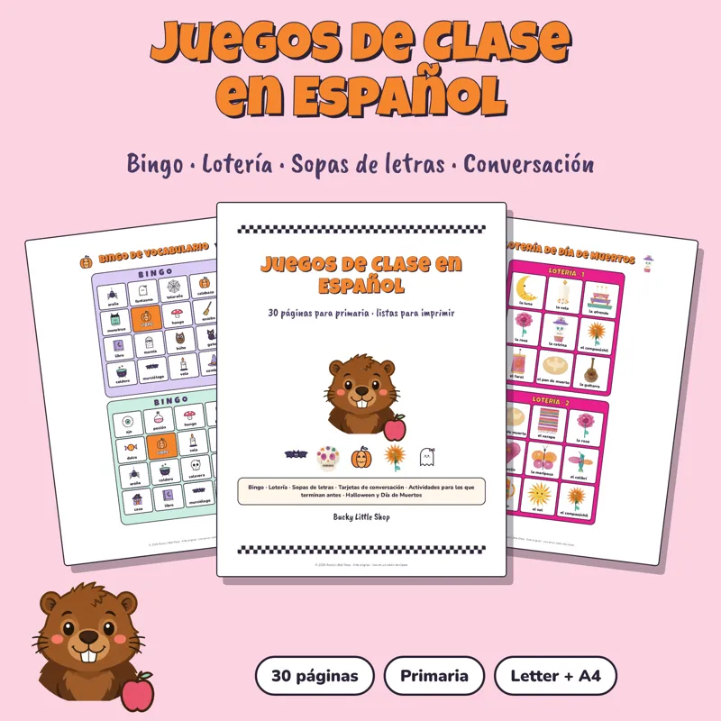
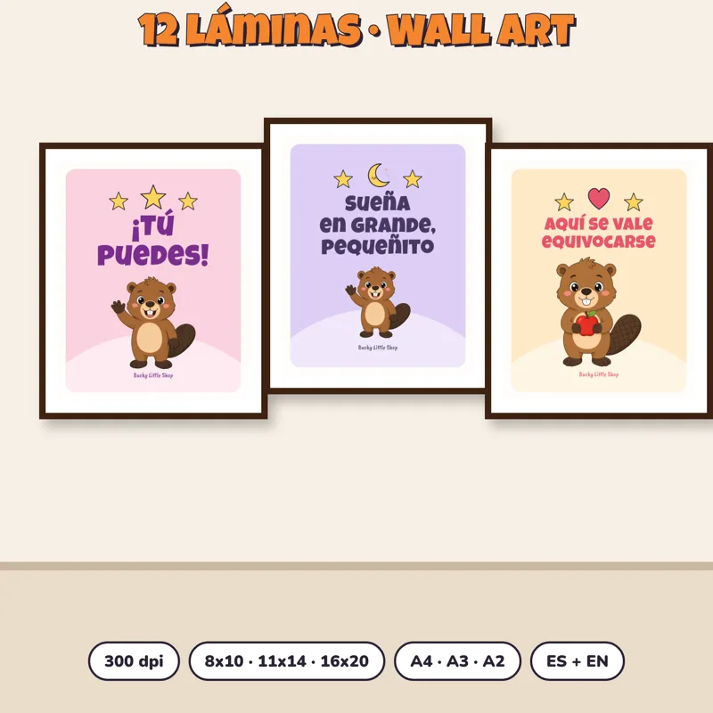
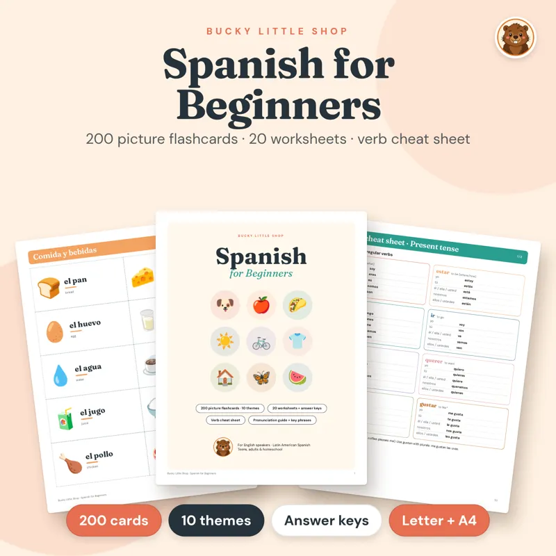

Home › Christmas classroom printables
Printable Christmas classroom activities for teachers
Fill the last weeks before break with 60 screen-free activity pages for $7.99 and 30 Spanish classroom games for $6.99, both licensed for one classroom. Instant PDFs in English and Spanish, US Letter and A4.

Kids Activity Mega Pack Printable
60 screen-free pages: mazes, coloring, dot-to-dot, picture sudoku and word search for quiet time, early finishers and learning centers. Ages about 4 to 9. Personal use or one classroom.
$7.99 USDBuy and download
Spanish Classroom Games Bundle
Not Christmas-themed: 30 pages of Spanish classroom games for elementary bilingual, dual-language, heritage and immersion classes. One teacher, one classroom.
$6.99 USDBuy and downloadWhat teachers need for the last weeks before break
December fills up fast: holiday parties, early finishers, rainy indoor recess and the quiet days after gifts are opened. Printable activities that are already licensed for one classroom save a planning period. Every kit on this page allows personal use or use in one classroom (each product page states its license). Nothing is shipped: you download the PDF and print on US Letter or A4.
What to print for your classroom
- Kids Activity Mega Pack ($7.99): 60 screen-free pages with mazes, coloring, dot-to-dot, picture sudoku and word search. Built for quiet time, road-trip bags, rainy days, learning centers and early finishers, ages about 4 to 9, in English and Spanish.
- Spanish Classroom Games ($6.99): 30 ready-to-print pages of Spanish classroom games for elementary bilingual, dual-language, heritage and Spanish-immersion classes. Not Christmas-themed, so you can keep using them after winter break. License: one teacher, one classroom.
- Three Kings Day kit ($4.99): for January 6 (Wednesday in 2027), a letter to the Three Kings with a wish list, a paper crown, 3 coloring pages, a word search, a maze and a 24-card memory game, for ages about 3 to 9. Personal use or one classroom.
- Classroom wall art ($9.99): 12 cheerful pastel posters with the Bucky mascot, each in English and Spanish (24 designs), in common classroom sizes. Personal and single-classroom use.
- Bucky coloring pages ($2.99): 10 thick-line coloring pages for fast centers and calm-down corners. Print for home or your classroom.
A simple week-of-break plan
- Monday to Wednesday: put a stack of Mega Pack pages in the early-finisher bin and a coloring sheet at each calm-down corner.
- Party day: use the Spanish Classroom Games pack for a short rotation, or hang a few wall-art posters for a festive backdrop that stays up into January.
- After Christmas, before Three Kings Day: send the letter-to-the-Kings page home, or make paper crowns in class on January 5 or 6.
- Print at 100% ("Actual size"). Cardstock helps for crowns and memory cards; plain paper is fine for mazes and coloring.
Looking for home-only Christmas games (personal use)? See Christmas activities for kids and Spanish Christmas printables. For January 6 traditions, see Rosca de Reyes.
¿Lo buscas en español? Mira las manualidades navideñas para niños y la rosca de Reyes.
More for your classroom this season

Bucky Three Kings Day Kit
For January 6: letter to the Three Kings with a wish list, paper crown, 3 coloring pages, word search, maze and 24-card memory game. Ages about 3 to 9. Personal use or one classroom.
$4.99 USDBuy and download
Kids Room and Classroom Wall Art Bundle
Brighten a nursery, playroom or classroom today.
$9.99 USDBuy and download
Bucky Coloring Pages for Kids
10 printable coloring pages starring Bucky, with thick, kid-friendly lines.
$2.99 USDBuy and download
Spanish for Beginners Printable Pack
Not Christmas-themed: 200 picture flashcards in 10 themes, 20 worksheets with answer keys and a verb cheat sheet. Latin American Spanish. Single-classroom use.
$6.99 USDBuy and download
All Holidays Mega Pack Printable Bundle
Every party from October to December, done!
$29 USDBuy and downloadQuestions
Can I use these in my classroom?
Yes for the kits on this page. The Kids Activity Mega Pack, Three Kings Day kit, Bucky coloring pages, wall art, Spanish for Beginners pack and Mega Pack allow personal use or one classroom. The Spanish Classroom Games pack is licensed for one teacher and one classroom. Please don't resell or share the files.
Are any of these free?
The free Christmas Mini Kit is a personal-use download for home, not licensed for classroom use. The classroom kits on this page are paid instant downloads.
Is the Spanish Classroom Games pack Christmas-themed?
No. It is year-round Spanish practice for elementary classes, so it still works after winter break.
When is Three Kings Day in 2027?
Día de Reyes is Wednesday, January 6, 2027. The Three Kings Day kit includes a letter, crown, coloring pages, puzzles and a memory game for ages about 3 to 9.
What ages are these for?
Most pages fit about ages 4 to 9. The Three Kings Day kit works from about 3 to 9. The Spanish Classroom Games pack is written for elementary Spanish classes.
Is anything shipped?
No. These are digital PDFs you download and print at school or at home.
¿Prefieres en español? Mira posadas y Navidad, tarjetas navideñas gratis y ideas para intercambio de regalos.